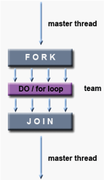
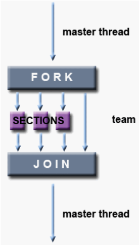
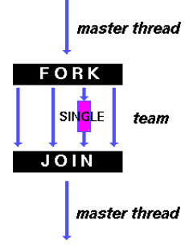

Como já foi abordado anteriormente no tutorial, o OpenMP é composto por 3 componentes principais da API, sendo estes: diretivas de compilador, biblioteca de execução e variáveis de ambiente. As diretivas de compilador serão bastante importantes na estrutura do nosso programa paralelo, pois servem para:
Estas diretivas consistem numa linha de código, funcionando como indicadores de zonas paralelas para o compilador no meio de um código em série. Em OpenMP, o programador não precisa de se preocupar com a criação dos threads, pois fica à responsabilidade do compilador, mas sim com o número de threads. O número de threads é determinado pelos seguintes fatores em ordem:
E ainda, é onde a paralelização irá acontecer e a sua configuração. Aqui só queremos abordar como código funcional para sistemas paralelos, e mais tarde veremos como são distribuídas as tarefas e a respectiva sincronização entre os threads.
Nota: Um programa com várias regiões paralelas, poderá utilizar o mesmo número de threads para executar cada região, ou não. Caso se queira alterar dinamicamente o número de threads de uma determinada região paralela durante a execução do programa teremos dois métodos disponíveis:
| Fortran | !$OMP PARALLEL DEFAULT(SHARED) PRIVATE(A,B,C,D) |
| C/C++ | #pragma omp parallel default(shared) private(a,b,c,d) |
| Sentinelas | !$OMP (Fortran), #pragma omp (C/C++) |
| Nome das diretivas | PARALLEL (Fortran), parallel (C/C++) |
| Cláusulas | DEFAULT(SHARED) e PRIVATE(A,B,C,D), default(shared) e private(a,b,c,d)(C/C++) |
Um exemplo mais concreto e de igual forma simples é o mítico “Hello World”. Um exemplo que ajuda a perceber os conceitos chaves por agora.
| Fortran | C/C++ |
|---|---|
| PROGRAM HELLO ! Zona de paralelizacao !$OMP PARALLEL ! Imprimir a mensagem “Hello World!” PRINT *, 'Hello World!' ! Acontece o join das threads, restando apenas a master !$OMP END PARALLEL END |
#include |
#pragma omp parallel num_threads(2) { #pragma single { printf("me\n"); } }
#pragma omp parallel num_threads(2) { #pragma omp single { printf("me\n"); } }
Como o nome diz, define uma região em paralelo onde o código irá ser executado por múltiplos threads em paralelo. Exceto para as “work-sharing constructs”, em que o trabalho é dividido pelos vários threads. Iremos ver isso mais adiante.
#pragma omp parallel [cláusulas]
{
// código que será corrido em paralelo.
} // final da região em paralelo
!$OMP PARALLEL [cláusulas]
// código que será corrido em paralelo.
!$OMP END PARALLEL
#pragma omp parallel num_threads(N)
{
int thread_id = omp_get_thread_num();
//printf("thread %d começou!\n", thread_id);
cliente(thread_id);
}
#pragma omp for
... //bloco_código
#pragma omp parallel for
... //bloco_código
A diferença ocorre que no primeiro caso o programa irá ser executado apenas por um thread, ou seja sequencialmente. No entanto, no segundo caso é utilizada a paralelização, ou seja, o bloco de código será executado por diversas threads, tirando maior rentabilidade do programa.
Neste caso, o objectivo é partilhar um loop entre dois threads. No primeiro caso, o utilizador coloca um parallel dentro de um parallel. Isso fará com que a função “myFunc()” seja chamada 20 vezes, 10 vezes por cada thread. No segundo thread, a remoção do parallel que se encontra no for faz com que o programa seja chamado 10 vezes, corrigindo o erro.
Uma diretiva “work-sharing construct” que está dentro de uma zona paralela inicializada pela diretiva parallel. Esta diretiva faz com que o trabalho dentro de um ciclo for seja dividido pelos vários threads. Uma barrier é definida implicitamente no final da região da diretiva sections em questão, a menos que a cláusula nowait seja especificada.

#pragma omp for [cláusulas]
// ciclo for
!$OMP DO [cláusulas]
// código que será corrido em paralelo.
!$OMP END DO [NOWAIT]
As cláusulas (opcionais) suportadas por esta diretiva são:
Nota:Mais à frente no tutorial, entraremos em mais detalhe em relação ao que faz cada uma destas cláusulas.
#pragma omp parallel num_threads(2)
for (int i = 0; i < 10; i++)
myFunc();
#pragma omp parallel for num_threads(2)
for (int i = 0; i < 10; i++)
myFunc();
Neste caso, o objectivo é partilhar um loop entre dois threads. No primeiro caso, a inexistência da diretiva for no “#pragma omp parallel”, faz com que o código seja executado uma vez em cada um dos threads, fazendo com que a função “myFunc()” seja chamada 20 vezes. No segundo caso, o loop é partilhado, fazendo com que a função “myFunc()” seja chamada 10 vezes.
As sections identifica partes do código na região em paralelo que irão ser divididas entre as várias Threads disponíveis, podendo concluir, então, que é uma “work-sharing construct”. Uma barrier é definida implicitamente no final da região da diretiva sections em questão, a menos que a cláusula nowait seja especificada.

#pragma omp sections [cláusulas]
{
#pragma omp section
//código que fará parte desta secção
#pragma omp section
//código que fará parte desta secção
} // final do código por secções
!$OMP SECTIONS [cláusulas]
!$OMP SECTION
//código que fará parte desta secção
!$OMP SECTION
//código que fará parte desta secção
!$OMP END SECTIONS [NOWAIT]
As cláusulas (opcionais) suportadas por esta diretiva são:
Nota: Mais à frente no tutorial, entraremos em mais detalhe em relação ao que faz cada uma destas cláusulas.
Esta diretiva indica que o bloco de código abrangido por ela será corrido apenas por um thread, não sendo necessariamente o master threads. Apesar de não ser tão óbvio, estamos perante uma “work-sharing construct”, pois o trabalho é distribuído por um thread apenas. Uma barrier é definida implicitamente no final da região da diretiva single, a menos que a cláusula nowait seja especificada.

#pragma omp single [cláusulas]
{
//código que irá correr numa única thread
}
!$OMP SINGLE [cláusulas]
//código que irá correr numa única thread
!$OMP END SINGLE [NOWAIT]
As cláusulas (opcionais) suportadas por esta diretiva são:
Nota: Mais à frente no tutorial, entraremos em mais detalhe em relação ao que faz cada uma destas cláusulas.
Estas diretivas são meramente convenientes, pois na maior parte comportam se de igual forma a uma diretiva parallel individual, sendo imediatamente seguida por uma diretiva de “work-sharing directive”. Os objetivos destas diretivas são as de reduzir o número de instruções OpenMP para determinadas regiões paralelas para melhor compreensão do código.
A maioria das regras, cláusulas e restrições que se aplicam a ambas as diretivas estão em vigor. Para mais detalhe é melhor ver a API do OpenMP.
Esta diretiva tem como função ser um ponto de sincronização, ou seja, todos os threads ao chegar a este ponto terão de esperar pelas outras. Depois do barrier, a execução continua em paralelo.
#pragma omp barrier
!$OMP BARRIER
A diretiva barrier não suporta qualquer tipo de cláusula.
Esta diretiva indica especifica que o bloco de código abrangido por ela só poderá ser executado por um thread de cada vez.
#pragma omp critical [(nome)]
{
//código que irá correr num thread de cada vez
}
!$OMP CRITICAL [(nome)]
//código
!$OMP END CRITICAL [(nome)]
O nome (opcional) é o identificador para a zona crítica. Sendo que zonas críticas sem nome irão ser consideradas a mesma zona crítica.
ALERTA: O nome, caso presente tem de estar dentro de parênteses curvos.
A diretiva critical não suporta qualquer tipo de cláusula.
// Espera por todos os clientes para efetuarem todas
// as ações ao mesmo tempo
#pragma omp critical (transacao)
{
// Se o cliente avisou que queria fazer um depósito, irá
// Efetuar um depósito. Os clientes que pretendem efetuar
// um depósito têm prioridade sobre os que pretendem
// levantar.
if(action == 1) {
deposito(quantia);
printf("[%d] %d foram depositados da sua conta.\nSaldo atual: %d\n", id, quantia, dinheiro);
}
// Se o cliente avisou que queria fazer um levantamento e
// possui saldo suficiente na conta para o efetuar, então
// irá efetuar um levantamento.
else if(action == 2 && quantia <= dinheiro) {
levantamento(quantia);
printf("[%d] %d foram levantados da sua conta.\nSaldo atual: %d\n",id, quantia, dinheiro);
}
// Caso o utilizador não possua saldo suficiente, irá
// avisar.
else if(action == 2) {
printf("[%d] ERRO: Saldo insuficiente.\n", id);
}
// Caso nenhuma das condições tenham sido atingidas, quer
// dizer que algo no programa falhou.
else {
printf("[%d] ERRO\n", id);
}
}
Esta diretiva é muitas vezes confundida com a diretiva critical, pois as funcionalidades são bastantes parecidas. A diretiva especifica que uma parte da memória irá ser atualizada atomicamente, em vez de vários threads tentarem atualizá-la (write), enquanto a diretiva critical delimita zonas.
#pragam omp atomic
expressão
!$OMP ATOMIC
expressão
void somatorio(double n) {
// Cria uma região paralela que será percorrida por
// N threads
#pragma omp parallel num_threads(N)
{
// Inicializa a variável id, que representa o número do thread
int id = omp_get_thread_num();
// Inicializa o mínimo e o máximo que o thread vai contar
int min = id * n/N + 1;
int max = (id+1) * n/N;
printf("[%d] min = %d ; max = %d\n",id, min, max);
// Como a obtenção do resultado é uma "mini" secção crítica,
// foi declarada uma zona atómica, onde o resultado irá ser incrementado
int sum = sum_until(min, max);
#pragma omp atomic
result = result + sum;
}
printf("Resultado: %d\n", result);
}
A expressão de código que contém a alocação de memória que queremos proteger contra várias atualizações (write).
A diretiva atomic não suporta qualquer tipo de cláusula.
Esta diretiva especifica que só quem pode executar aquele bloco de código é o master thread.
#pragma omp master
{
//bloco de código
}
!$OMP MASTER
//código
!$OMP END MASTER
A diretiva master não suporta qualquer tipo de cláusula.
Esta diretiva é uma das mais diretivas de sincronização, especificando que, numa zona paralela, todas as threads têm a mesma exibição de memória de objetos especificados na memória.
#pragma omp flush [(lista_variaveis)]
!$OMP FLUSH [(lista variáveis)]
A lista_variaveis (opcional) é os vários objetos que queremos sincronizar. Se esta lista não for especificada todas os objetos partilhados serão sincronizados.
A diretiva flush não suporta qualquer tipo de cláusula.
A diretiva flush aparece em conjunção com as seguintes diretivas:
Esta diretiva especifica que um trabalho dentro de um ciclo for dentro de uma região paralela deve ser executada de forma sequencial.
#pragma omp ordered
//bloco com o ciclo for
!$OMP ORDERED
//bloco com o ciclo for
!$OMP END ORDERED
A diretiva ordered tem de estar dentro de uma diretiva for ou parallel for com a cláusula ordered.
A diretiva ordered não suporta qualquer tipo de cláusula.
Esta diretiva especifica que uma ou mais variáveis são privadas para um thread, sendo que cada cópia dessas variáveis é inicializada antes de serem usadas pela primeira vez.
#pragma omp threadprivate(vars)
!$OMP THREADPRIVATE (/cb/, …) onde cb é o nome de um bloco comum
A vars é uma lista de variáveis separadas por vírgulas, que iremos querer tornar privadas num thread. vars deve ser “named file-scope, namespace-scope, or static block-scope variables”.
A diretiva threadprivate não suporta qualquer tipo de cláusula.
#pragma omp parallel num_threads(2)
{
#pragma omp parallel for
for (int i = 0; i < 10; i++)
{
myFunc();
}
}
#pragma omp parallel num_threads(2)
{
#pragma omp for
for (int i = 0; i < 10; i++)
{
myFunc();
}
}
Neste caso, o objectivo é partilhar um loop entre dois threads. No primeiro caso, o utilizador coloca um parallel dentro de um parallel. Isso fará com que a função “myFunc()” seja chamada 20 vezes, 10 vezes por cada thread. No segundo thread, a remoção do parallel que se encontra no for faz com que o programa seja chamado 10 vezes, corrigindo o erro.